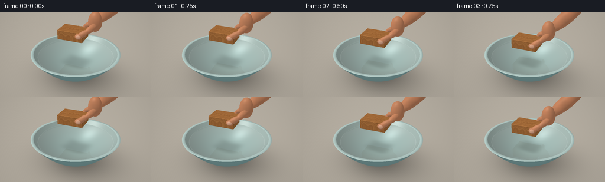
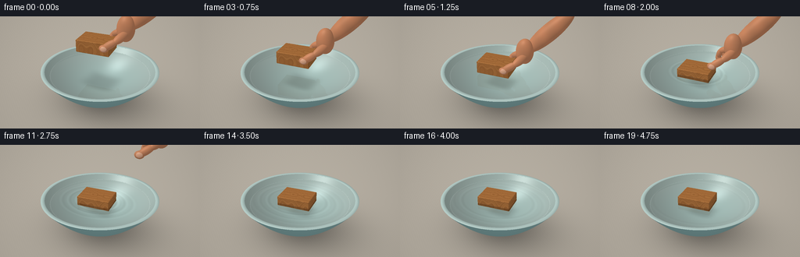
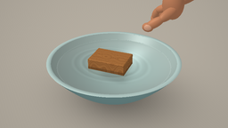

CODING AGENTS AS PIXEL WORLD MODELS
traex/GPT-6.1-Sol · phygen_009
点击播放 · 原生 RGB 像素
逐轮保存的候选
回放视频、检查图与代码变化。
每份候选均可单独播放。实际图片检查记录在下方工具轨迹中。
候选 01播放与检查图
点击播放 · 原生 RGB 像素

展开代码变化
--- 上一保存版本
+++ 本次保存版本
@@ -0,0 +1,281 @@
+from pathlib import Path
+import math
+import numpy as np
+from PIL import Image
+import artifact_io
+
+ROOT = Path(__file__).resolve().parent
+W,H,SS=256,144,3
+rng=np.random.default_rng(8)
+
+def unit(x):
+ x=np.asarray(x,dtype=np.float32)
+ return x/np.maximum(np.linalg.norm(x,axis=-1,keepdims=True),1e-9)
+
+CAM=np.array([3.5,-6.0,4.9],np.float32)
+TARGET=np.array([0,0,0.95],np.float32)
+F=unit(TARGET-CAM); R=unit(np.cross(F,[0,0,1])); U=unit(np.cross(R,F))
+yy,xx=np.mgrid[0:H*SS,0:W*SS]
+sx=(xx.ravel()+.5)/(W*SS)*2-1
+sy=1-(yy.ravel()+.5)/(H*SS)*2
+D=unit(F+sx[:,None]*.365*R+sy[:,None]*.365*(H/W)*U)
+O=np.broadcast_to(CAM,D.shape)
+LIGHT=unit([-3.5,-4.5,7])
+ANGLE=.15
+CO,SI=np.cos(ANGLE),np.sin(ANGLE)
+ROT=np.array([[CO,-SI,0],[SI,CO,0],[0,0,1]],np.float32)
+
+
+def state(i):
+ # A controlled, slow lowering. Contact is followed by a short buoyant settle.
+ if i<=6:
+ u=i/6
+ z=1.68-(1.68-.965)*(u*u*(3-2*u))
+ else:
+ t=(i-6)/4
+ z=.815+.15*np.exp(-3*t)*np.cos(4.5*t)
+ drift=max(i-8,0)*.0025
+ return np.array([-.08+drift,-.045,z],np.float32)
+
+
+def hand_parts(i,c):
+ if i>=13: return []
+ release=max(0,(i-7)/5)
+ c=c+np.array([release*.95,release*.55,release*1.85],np.float32)
+ # Palm, forearm, and natural opposed thumb/index grasp.
+ def p(a): return np.asarray(a,np.float32)@ROT.T+c
+ parts=[]
+ def ell(center,rad):
+ parts.append((p(center),np.diag(np.asarray(rad,np.float32))@ROT.T))
+ def seg(a,b,r1,r2=None):
+ a,b=p(a),p(b); axis=unit(b-a)
+ v=unit(np.cross(axis,[0,1,0])); w=unit(np.cross(axis,v))
+ radius=r1 if r2 is None else r2
+ mat=np.array([v*r1,w*radius,axis*(np.linalg.norm(b-a)*.5+r1*.68)],np.float32)
+ parts.append(((a+b)*.5,mat))
+ seg([.88,.30,.73],[1.78,.57,1.67],.24,.20)
+ ell([.76,.18,.66],[.25,.21,.37])
+ # Index finger curls down behind the back edge.
+ seg([.65,.24,.56],[.37,.31,.42],.092)
+ seg([.37,.31,.42],[.30,.35,.21],.085)
+ ell([.30,.35,.18],[.085,.078,.12])
+ # Thumb pads touch the near side of the block, not its top.
+ seg([.82,.03,.58],[.62,-.25,.43],.115,.10)
+ seg([.62,-.25,.43],[.34,-.355,.24],.105,.09)
+ ell([.34,-.355,.235],[.13,.086,.105])
+ # Remaining fingers rest together behind the wood.
+ for k in range(3):
+ y=.38+k*.13
+ seg([.70,y-.05,.59-k*.03],[.46,y,.38-k*.02],.082-k*.005)
+ seg([.46,y,.38-k*.02],[.45,y+.025,.23-k*.018],.078-k*.005)
+ return parts
+
+
+def trace(o,d,c,parts,wood=True):
+ n=len(d); t=np.full(n,1e5,np.float32); norm=np.zeros((n,3),np.float32); ids=np.full(n,-1,np.int16)
+ def update(tt,nn,ident,valid=None):
+ take=(tt>1e-4)&(tt<t)
+ if valid is not None: take&=valid
+ t[take]=tt[take]
+ if np.ndim(nn)==1: norm[take]=nn
+ else: norm[take]=nn[take]
+ ids[take]=ident
+ # Warm continuous tabletop.
+ tg=-o[:,2]/np.where(np.abs(d[:,2])>1e-7,d[:,2],1e-7)
+ update(tg,np.array([0,0,1]),0)
+ # A thick ceramic bowl with two exact paraboloid surfaces.
+ for a,z0,ident,flip in [(.38,.03,1,1),(.367,.20,2,-1)]:
+ aa=a*(d[:,0]**2+d[:,1]**2)
+ bb=2*a*(o[:,0]*d[:,0]+o[:,1]*d[:,1])-d[:,2]
+ cc=a*(o[:,0]**2+o[:,1]**2)+z0-o[:,2]
+ disc=bb*bb-4*aa*cc
+ root=np.sqrt(np.maximum(disc,0))
+ for s in [-1,1]:
+ tt=(-bb+s*root)/(2*aa+1e-12)
+ p=o+d*tt[:,None]
+ nn=unit(np.stack([2*a*p[:,0],2*a*p[:,1],np.full(n,-1)],1))*flip
+ update(tt,nn,ident,(disc>=0)&(p[:,2]>=z0)&(p[:,2]<=1.11))
+ # Rounded-looking, glazed lip.
+ tr=(1.11-o[:,2])/np.where(np.abs(d[:,2])>1e-7,d[:,2],1e-7)
+ p=o+d*tr[:,None]; rr=np.linalg.norm(p[:,:2],axis=1)
+ mid=(1.686+1.575)/2
+ slope=(rr-mid)/.062
+ nr=unit(np.stack([p[:,0]/np.maximum(rr,1e-9)*slope,p[:,1]/np.maximum(rr,1e-9)*slope,np.ones(n)*1.3],1))
+ update(tr,nr,3,(rr>=1.575)&(rr<=1.686))
+ if wood:
+ # Slightly chamfered rectangular solid; clipping planes soften all twelve edges.
+ lo=(o-c)@ROT; ld=d@ROT
+ half=np.array([.48,.335,.18],np.float32)
+ center=np.array([0,0,.18],np.float32)
+ lo=lo-center
+ near=np.full(n,-1e6,np.float32); far=np.full(n,1e6,np.float32); wn=np.zeros((n,3),np.float32)
+ planes=[]
+ for axis in range(3):
+ for sign in [-1,1]:
+ normal=np.zeros(3,np.float32); normal[axis]=sign
+ planes.append((normal,half[axis]))
+ bevel=.016
+ for a in range(3):
+ for b in range(a+1,3):
+ for sa in [-1,1]:
+ for sb in [-1,1]:
+ normal=np.zeros(3,np.float32); normal[a]=sa; normal[b]=sb
+ planes.append((normal,half[a]+half[b]-bevel))
+ valid=np.ones(n,bool)
+ for normal,limit in planes:
+ den=ld@normal; num=limit-lo@normal
+ tt=num/np.where(abs(den)>1e-8,den,1e-8)
+ incoming=den<0
+ select=incoming&(tt>near)
+ near[select]=tt[select]; wn[select]=unit(normal)@ROT.T
+ far=np.where(~incoming,np.minimum(far,tt),far)
+ valid&=~((abs(den)<1e-8)&(num<0))
+ update(near,wn,4,valid&(far>=near))
+ for j,(center,mat) in enumerate(parts):
+ inv=np.linalg.inv(mat)
+ q=(o-center)@inv; v=d@inv
+ aa=np.sum(v*v,1); bb=np.sum(q*v,1); cc=np.sum(q*q,1)-1
+ disc=bb*bb-aa*cc
+ tt=(-bb-np.sqrt(np.maximum(disc,0)))/aa
+ pos=q+v*tt[:,None]
+ nn=unit(pos@inv.T)
+ update(tt,nn,10+j,disc>0)
+ return t,norm,ids
+
+
+def environment(d):
+ # A large window outside the frame provides broad soft studio reflections.
+ val=np.clip(d[:,2],0,1)
+ col=np.array([.72,.735,.72])[None,:]+val[:,None]*np.array([.19,.19,.2])
+ win=np.exp(-((d[:,0]+.42)/.30)**8-((d[:,1]+.48)/.38)**8)*np.clip(d[:,2]*2,0,1)
+ col+=win[:,None]*.16
+ return col
+
+
+def shade(o,d,t,n,ids,c,i):
+ p=o+d*t[:,None]
+ base=np.full((len(d),3),.8,np.float32)
+ ground=ids==0; outer=ids==1; inner=ids==2; rim=ids==3; wood=ids==4; skin=ids>=10
+ # Subtle fine stone surface; warm neutral setting without clutter.
+ g=p[ground]; grain=.002*np.sin(g[:,0]*57+g[:,1]*83)+.002*np.sin(g[:,0]*130-g[:,1]*96)
+ base[ground]=np.array([.73,.70,.65])+grain[:,None]
+ ceramic=(outer|inner|rim)
+ cp=p[ceramic]
+ ceramic_tex=.002*np.sin(cp[:,2]*290+cp[:,0]*150)*np.sin(cp[:,1]*120)
+ base[ceramic]=np.array([.51,.66,.66])+ceramic_tex[:,None]
+ base[inner]=np.array([.72,.80,.775])
+ base[rim]=np.array([.70,.79,.77])
+ wp=(p[wood]-c)@ROT
+ if len(wp):
+ x,y,z=wp.T
+ # Oak fibres wrap continuously around the length of the timber.
+ radial=np.sqrt((y+.055)**2+(.65*(z-.10))**2)
+ bend=.016*np.sin(x*9)+.013*np.sin(x*18+y*5)
+ bands=radial+bend
+ fine=np.sin(bands*340+x*4)
+ pores=np.maximum(0,np.sin(bands*580+x*17))**18
+ rings=.5+.5*np.sin(bands*78+x*2)
+ tonal=.022*fine+.018*np.sin(bands*160)-.048*pores-.025*rings
+ # Small elongated figure on the top, never a printed texture.
+ knot=np.sqrt(((x+.16)*.34)**2+(y-.03)**2)
+ top=np.abs(n[wood,2])>.8
+ tonal+=top*(.017*np.sin(knot*180+.9*np.sin(x*10))*np.exp(-knot*7))
+ end=np.abs((n[wood]@ROT)[:,0])>.8
+ tonal+=end*(.025*np.sin(np.sqrt((y+.1)**2+(z-.02)**2)*145))
+ base[wood]=np.array([.66,.435,.235])+tonal[:,None]*np.array([1,.86,.6])
+ # Wet lower sides darken at a horizontal waterline.
+ wet=p[wood,2]<.967
+ base[np.flatnonzero(wood)[wet]]*=.80
+ if np.any(skin):
+ sp=p[skin]; sn=n[skin]
+ redness=.015*np.sin(sp[:,0]*12+sp[:,2]*9)
+ base[skin]=np.array([.77,.515,.37])+redness[:,None]*np.array([1,.4,.2])
+ # A softly coloured thumb nail on the outer-facing pad.
+ loc=(sp-c)@ROT
+ release=max(0,(i-7)/5)
+ shift=np.array([release*.95,release*.55,release*1.85])@ROT
+ loc-=shift
+ nail=((loc[:,0]-.355)/.085)**2+((loc[:,2]-.25)/.066)**2
+ nailmask=(nail<1)&(loc[:,1]<-.396)
+ bid=np.flatnonzero(skin)
+ base[bid[nailmask]]=np.array([.86,.65,.53])
+ diffuse=np.maximum(n@LIGHT,0)
+ light=.72+.33*diffuse
+ # Soft contact shadows, and inner-bowl ambient occlusion.
+ gp=p[ground]
+ sh=np.exp(-((gp[:,0]-.18)/1.55)**2-((gp[:,1]-.14)/1.36)**2)
+ light[ground]*=1-.34*sh
+ light[ground]*=1-.17*np.exp(-(gp[:,0]**2+gp[:,1]**2)/.56)
+ light[inner]*=.89
+ light[outer]*=.94+.06*np.clip(p[outer,2]/1.11,0,1)
+ if np.any(inner):
+ pi=p[inner]
+ h=max(c[2]-.96,0)
+ shadow=np.exp(-((pi[:,0]-c[0]-.10)/(.40+h*.13))**4-((pi[:,1]-c[1]-.10)/(.29+h*.13))**4)
+ light[inner]*=1-.16*shadow
+ col=base*light[:,None]
+ half=unit(LIGHT-d)
+ spec=np.maximum(np.sum(n*half,1),0)
+ col[ceramic]+=((spec[ceramic]**58)*.16)[:,None]
+ col[wood]+=((spec[wood]**25)*.035)[:,None]*np.array([1,.88,.69])
+ col[skin]+=((spec[skin]**30)*.06)[:,None]
+ col[ids<0]=environment(d[ids<0])
+ return col
+
+
+def render(i):
+ c=state(i); parts=hand_parts(i,c)
+ t,n,ids=trace(O,D,c,parts)
+ col=shade(O,D,t,n,ids,c,i)
+ tw=(.965-O[:,2])/D[:,2]
+ pw=O+D*tw[:,None]
+ radial=np.linalg.norm(pw[:,:2],axis=1)
+ water=(tw>0)&(tw<t)&(radial<math.sqrt((.965-.20)/.367))
+ ix=np.flatnonzero(water)
+ if len(ix):
+ p=pw[ix]; ray=D[ix]
+ # Gentle concentric waves emerge at contact and broaden, then disappear.
+ rr=np.sqrt((p[:,0]-c[0])**2+((p[:,1]-c[1])/.83)**2)
+ slope=np.zeros(len(ix),np.float32)
+ age=(i-6)/4
+ if age>=0:
+ for start in [0,.55,1.18]:
+ a=age-start
+ if a>=0:
+ radius=.39+.72*a
+ envelope=np.exp(-((rr-radius)/.095)**2)*np.exp(-a*.75)
+ slope+=.012*envelope*np.cos((rr-radius)*34)
+ slope+=.0006*np.sin(rr*24+i*.3)
+ nw=unit(np.stack([-slope*(p[:,0]-c[0])/np.maximum(rr,.01),-slope*(p[:,1]-c[1])/(.83**2*np.maximum(rr,.01)),np.ones(len(ix))],1))
+ # Refracted view of the bowl interior makes the water visibly transparent.
+ eta=1/1.333; ci=-np.sum(ray*nw,1)
+ rd=eta*ray+(eta*ci-np.sqrt(1-eta*eta*(1-ci*ci)))[:,None]*nw
+ wt,wn,wi=trace(p+rd*.0005,rd,c,parts)
+ transmitted=shade(p+rd*.0005,rd,wt,wn,wi,c,i)
+ depth=np.minimum(wt,2)
+ attenuation=np.exp(-depth[:,None]*np.array([.13,.037,.025]))
+ transmitted=transmitted*attenuation+np.array([.36,.59,.57])*(1-attenuation)
+ reflect=ray+2*ci[:,None]*nw
+ rt,rn,ri=trace(p+reflect*.0005,reflect,c,parts)
+ reflected=shade(p+reflect*.0005,reflect,rt,rn,ri,c,i)
+ fresnel=.020+.98*(1-ci)**5
+ wc=transmitted*(1-fresnel[:,None])+reflected*fresnel[:,None]
+ h=unit(LIGHT-ray)
+ sparkle=np.maximum(np.sum(nw*h,1),0)**140
+ wc+=sparkle[:,None]*.22
+ # The meniscus catches a fine glint against the pale ceramic.
+ edge=np.exp(-((radial[ix]-1.441)/.014)**2)*.05
+ wc+=edge[:,None]
+ col[ix]=wc
+ # Subtle photographic vignette.
+ vignette=1-.055*(sx*sx+sy*sy*.4)
+ col*=vignette[:,None]
+ out=np.uint8(np.clip(col*255,0,255)).reshape(H*SS,W*SS,3)
+ return np.asarray(Image.fromarray(out).resize((W,H),Image.Resampling.LANCZOS))
+
+if __name__=='__main__':
+ frames=[]
+ for i in range(20):
+ frames.append(render(i))
+ print(f'frame {i:02d}',flush=True)
+ artifact_io.save(np.stack(frames),ROOT)
候选 02播放与检查图
点击播放 · 原生 RGB 像素

展开代码变化
--- 上一保存版本
+++ 本次保存版本
@@ -1,5 +1,7 @@
from pathlib import Path
import math
+import shutil
+import subprocess
import numpy as np
from PIL import Image
import artifact_io
@@ -237,14 +239,16 @@
# Gentle concentric waves emerge at contact and broaden, then disappear.
rr=np.sqrt((p[:,0]-c[0])**2+((p[:,1]-c[1])/.83)**2)
slope=np.zeros(len(ix),np.float32)
+ ripple_glint=np.zeros(len(ix),np.float32)
age=(i-6)/4
if age>=0:
for start in [0,.55,1.18]:
a=age-start
if a>=0:
- radius=.39+.72*a
+ radius=.58+.40*a
envelope=np.exp(-((rr-radius)/.095)**2)*np.exp(-a*.75)
- slope+=.012*envelope*np.cos((rr-radius)*34)
+ slope+=.042*envelope*np.cos((rr-radius)*34)
+ ripple_glint+=.048*envelope*np.sin((rr-radius)*34)
slope+=.0006*np.sin(rr*24+i*.3)
nw=unit(np.stack([-slope*(p[:,0]-c[0])/np.maximum(rr,.01),-slope*(p[:,1]-c[1])/(.83**2*np.maximum(rr,.01)),np.ones(len(ix))],1))
# Refracted view of the bowl interior makes the water visibly transparent.
@@ -263,6 +267,7 @@
h=unit(LIGHT-ray)
sparkle=np.maximum(np.sum(nw*h,1),0)**140
wc+=sparkle[:,None]*.22
+ wc+=ripple_glint[:,None]*np.array([.84,1.,1.])
# The meniscus catches a fine glint against the pale ceramic.
edge=np.exp(-((radial[ix]-1.441)/.014)**2)*.05
wc+=edge[:,None]
@@ -279,3 +284,5 @@
frames.append(render(i))
print(f'frame {i:02d}',flush=True)
artifact_io.save(np.stack(frames),ROOT)
+ if shutil.which("ffmpeg"):
+ subprocess.run(["ffmpeg","-y","-loglevel","error","-framerate","4","-i",str(ROOT/"frames"/"%02d.png"),"-c:v","libx264","-crf","16","-pix_fmt","yuv420p",str(ROOT/"video.mp4")],check=True)
可观测工具轨迹
实际执行的命令与返回图片。
命令 1exit 0
/bin/bash -lc "ls -la && cat prompt.txt && printf '\\n--- RULES ---\\n' && cat GENERATION_RULES.md && printf '\\n--- SPEC ---\\n' && cat task_spec.json"
命令 2exit 0
/bin/bash -lc "cat artifact_io.py && printf '\\n--- libs ---\\n' && python - <<'PY' import numpy, PIL print(numpy.__version__) PY"
命令 3exit 0
/bin/bash -lc "cat > generate.py <<'PY'
from pathlib import Path
import math
import numpy as np
from PIL import Image
import artifact_io
ROOT = Path(__file__).resolve().parent
W,H,SS=256,144,3
rng=np.random.default_rng(8)
def unit(x):
x=np.asarray(x,dtype=np.float32)
return x/np.maximum(np.linalg.norm(x,axis=-1,keepdims=True),1e-9)
CAM=np.array([3.5,-6.0,4.9],np.float32)
TARGET=np.array([0,0,0.95],np.float32)
F=unit(TARGET-CAM); R=unit(np.cross(F,[0,0,1])); U=unit(np.cross(R,F))
yy,xx=np.mgrid[0:H*SS,0:W*SS]
sx=(xx.ravel()+.5)/(W*SS)*2-1
sy=1-(yy.ravel()+.5)/(H*SS)*2
D=unit(F+sx[:,None]*.365*R+sy[:,None]*.365*(H/W)*U)
O=np.broadcast_to(CAM,D.shape)
LIGHT=unit([-3.5,-4.5,7])
ANGLE=.15
CO,SI=np.cos(ANGLE),np.sin(ANGLE)
ROT=np.array([[CO,-SI,0],[SI,CO,0],[0,0,1]],np.float32)
def state(i):
# A controlled, slow lowering. Contact is followed by a short buoyant settle.
if i<=6:
u=i/6
z=1.68-(1.68-.965)*(u*u*(3-2*u))
else:
t=(i-6)/4
z=.815+.15*np.exp(-3*t)*np.cos(4.5*t)
drift=max(i-8,0)*.0025
return np.array([-.08+drift,-.045,z],np.float32)
def hand_parts(i,c):
if i>=13: return []
release=max(0,(i-7)/5)
c=c+np.array([release*.95,release*.55,release*1.85],np.float32)
# Palm, forearm, and natural opposed thumb/index grasp.
def p(a): return np.asarray(a,np.float32)@ROT.T+c
parts=[]
def ell(center,rad):
parts.append((p(center),np.diag(np.asarray(rad,np.float32))@ROT.T))
def seg(a,b,r1,r2=None):
a,b=p(a),p(b); axis=unit(b-a)
v=unit(np.cross(axis,[0,1,0])); w=unit(np.cross(axis,v))
radius=r1 if r2 is None else r2
mat=np.array([v*r1,w*radius,axis*(np.linalg.norm(b-a)*.5+r1*.68)],np.float32)
parts.append(((a+b)*.5,mat))
seg([.88,.30,.73],[1.78,.57,1.67],.24,.20)
ell([.76,.18,.66],[.25,.21,.37])
# Index finger curls down behind the back edge.
seg([.65,.24,.56],[.37,.31,.42],.092)
seg([.37,.31,.42],[.30,.35,.21],.085)
ell([.30,.35,.18],[.085,.078,.12])
# Thumb pads touch the near side of the block, not its top.
seg([.82,.03,.58],[.62,-.25,.43],.115,.10)
seg([.62,-.25,.43],[.34,-.355,.24],.105,.09)
ell([.34,-.355,.235],[.13,.086,.105])
# Remaining fingers rest together behind the wood.
for k in range(3):
y=.38+k*.13
seg([.70,y-.05,.59-k*.03],[.46,y,.38-k*.02],.082-k*.005)
seg([.46,y,.38-k*.02],[.45,y+.025,.23-k*.018],.078-k*.005)
return parts
def trace(o,d,c,parts,wood=True):
n=len(d); t=np.full(n,1e5,np.float32); norm=np.zeros((n,3),np.float32); ids=np.full(n,-1,np.int16)
def update(tt,nn,ident,valid=None):
take=(tt>1e-4)&(tt<t)
if valid is not None: take&=valid
t[take]=tt[take]
if np.ndim(nn)==1: norm[take]=nn
else: norm[take]=nn[take]
ids[take]=ident
# Warm continuous tabletop.
tg=-o[:,2]/np.where(np.abs(d[:,2])>1e-7,d[:,2],1e-7)
update(tg,np.array([0,0,1]),0)
# A thick ceramic bowl with two exact paraboloid surfaces.
for a,z0,ident,flip in [(.38,.03,1,1),(.367,.20,2,-1)]:
aa=a*(d[:,0]**2+d[:,1]**2)
bb=2*a*(o[:,0]*d[:,0]+o[:,1]*d[:,1])-d[:,2]
cc=a*(o[:,0]**2+o[:,1]**2)+z0-o[:,2]
disc=bb*bb-4*aa*cc
root=np.sqrt(np.maximum(disc,0))
for s in [-1,1]:
tt=(-bb+s*root)/(2*aa+1e-12)
p=o+d*tt[:,None]
nn=unit(np.stack([2*a*p[:,0],2*a*p[:,1],np.full(n,-1)],1))*flip
update(tt,nn,ident,(disc>=0)&(p[:,2]>=z0)&(p[:,2]<=1.11))
# Rounded-looking, glazed lip.
tr=(1.11-o[:,2])/np.where(np.abs(d[:,2])>1e-7,d[:,2],1e-7)
p=o+d*tr[:,None]; rr=np.linalg.norm(p[:,:2],axis=1)
mid=(1.686+1.575)/2
slope=(rr-mid)/.062
nr=unit(np.stack([p[:,0]/np.maximum(rr,1e-9)*slope,p[:,1]/np.maximum(rr,1e-9)*slope,np.ones(n)*1.3],1))
update(tr,nr,3,(rr>=1.575)&(rr<=1.686))
if wood:
# Slightly chamfered rectangular solid; clipping planes soften all twelve edges.
lo=(o-c)@ROT; ld=d@ROT
half=np.array([.48,.335,.18],np.float32)
center=np.array([0,0,.18],np.float32)
lo=lo-center
near=np.full(n,-1e6,np.float32); far=np.full(n,1e6,np.float32); wn=np.zeros((n,3),np.float32)
planes=[]
for axis in range(3):
for sign in [-1,1]:
normal=np.zeros(3,np.float32); normal[axis]=sign
planes.append((normal,half[axis]))
bevel=.016
for a in range(3):
for b in range(a+1,3):
for sa in [-1,1]:
for sb in [-1,1]:
normal=np.zeros(3,np.float32); normal[a]=sa; normal[b]=sb
planes.append((normal,half[a]+half[b]-bevel))
valid=np.ones(n,bool)
for normal,limit in planes:
den=ld@normal; num=limit-lo@normal
tt=num/np.where(abs(den)>1e-8,den,1e-8)
incoming=den<0
select=incoming&(tt>near)
near[select]=tt[select]; wn[select]=unit(normal)@ROT.T
far=np.where(~incoming,np.minimum(far,tt),far)
valid&=~((abs(den)<1e-8)&(num<0))
update(near,wn,4,valid&(far>=near))
for j,(center,mat) in enumerate(parts):
inv=np.linalg.inv(mat)
q=(o-center)@inv; v=d@inv
aa=np.sum(v*v,1); bb=np.sum(q*v,1); cc=np.sum(q*q,1)-1
disc=bb*bb-aa*cc
tt=(-bb-np.sqrt(np.maximum(disc,0)))/aa
pos=q+v*tt[:,None]
nn=unit(pos@inv.T)
update(tt,nn,10+j,disc>0)
return t,norm,ids
def environment(d):
# A large window outside the frame provides broad soft studio reflections.
val=np.clip(d[:,2],0,1)
col=np.array([.72,.735,.72])[None,:]+val[:,None]*np.array([.19,.19,.2])
win=np.exp(-((d[:,0]+.42)/.30)**8-((d[:,1]+.48)/.38)**8)*np.clip(d[:,2]*2,0,1)
col+=win[:,None]*.16
return col
def shade(o,d,t,n,ids,c,i):
p=o+d*t[:,None]
base=np.full((len(d),3),.8,np.float32)
ground=ids==0; outer=ids==1; inner=ids==2; rim=ids==3; wood=ids==4; skin=ids>=10
# Subtle fine stone surface; warm neutral setting without clutter.
g=p[ground]; grain=.002*np.sin(g[:,0]*57+g[:,1]*83)+.002*np.sin(g[:,0]*130-g[:,1]*96)
base[ground]=np.array([.73,.70,.65])+grain[:,None]
ceramic=(outer|inner|rim)
cp=p[ceramic]
ceramic_tex=.002*np.sin(cp[:,2]*290+cp[:,0]*150)*np.sin(cp[:,1]*120)
base[ceramic]=np.array([.51,.66,.66])+ceramic_tex[:,None]
base[inner]=np.array([.72,.80,.775])
base[rim]=np.array([.70,.79,.77])
wp=(p[wood]-c)@ROT
if len(wp):
x,y,z=wp.T
# Oak fibres wrap continuously around the length of the timber.
radial=np.sqrt((y+.055)**2+(.65*(z-.10))**2)
bend=.016*np.sin(x*9)+.013*np.sin(x*18+y*5)
bands=radial+bend
fine=np.sin(bands*340+x*4)
pores=np.maximum(0,np.sin(bands*580+x*17))**18
rings=.5+.5*np.sin(bands*78+x*2)
tonal=.022*fine+.018*np.sin(bands*160)-.048*pores-.025*rings
# Small elongated figure on the top, never a printed texture.
knot=np.sqrt(((x+.16)*.34)**2+(y-.03)**2)
top=np.abs(n[wood,2])>.8
tonal+=top*(.017*np.sin(knot*180+.9*np.sin(x*10))*np.exp(-knot*7))
end=np.abs((n[wood]@ROT)[:,0])>.8
tonal+=end*(.025*np.sin(np.sqrt((y+.1)**2+(z-.02)**2)*145))
base[wood]=np.array([.66,.435,.235])+tonal[:,None]*np.array([1,.86,.6])
# Wet lower sides darken at a horizontal waterline.
wet=p[wood,2]<.967
base[np.flatnonzero(wood)[wet]]*=.80
if np.any(skin):
sp=p[skin]; sn=n[skin]
redness=.015*np.sin(sp[:,0]*12+sp[:,2]*9)
base[skin]=np.array([.77,.515,.37])+redness[:,None]*np.array([1,.4,.2])
# A softly coloured thumb nail on the outer-facing pad.
loc=(sp-c)@ROT
release=max(0,(i-7)/5)
shift=np.array([release*.95,release*.55,release*1.85])@ROT
loc-=shift
nail=((loc[:,0]-.355)/.085)**2+((loc[:,2]-.25)/.066)**2
nailmask=(nail<1)&(loc[:,1]<-.396)
bid=np.flatnonzero(skin)
base[bid[nailmask]]=np.array([.86,.65,.53])
diffuse=np.maximum(n@LIGHT,0)
light=.72+.33*diffuse
# Soft contact shadows, and inner-bowl ambient occlusion.
gp=p[ground]
sh=np.exp(-((gp[:,0]-.18)/1.55)**2-((gp[:,1]-.14)/1.36)**2)
light[ground]*=1-.34*sh
light[ground]*=1-.17*np.exp(-(gp[:,0]**2+gp[:,1]**2)/.56)
light[inner]*=.89
light[outer]*=.94+.06*np.clip(p[outer,2]/1.11,0,1)
if np.any(inner):
pi=p[inner]
h=max(c[2]-.96,0)
shadow=np.exp(-((pi[:,0]-c[0]-.10)/(.40+h*.13))**4-((pi[:,1]-c[1]-.10)/(.29+h*.13))**4)
light[inner]*=1-.16*shadow
col=base*light[:,None]
half=unit(LIGHT-d)
spec=np.maximum(np.sum(n*half,1),0)
col[ceramic]+=((spec[ceramic]**58)*.16)[:,None]
col[wood]+=((spec[wood]**25)*.035)[:,None]*np.array([1,.88,.69])
col[skin]+=((spec[skin]**30)*.06)[:,None]
col[ids<0]=environment(d[ids<0])
return col
def render(i):
c=state(i); parts=hand_parts(i,c)
t,n,ids=trace(O,D,c,parts)
col=shade(O,D,t,n,ids,c,i)
tw=(.965-O[:,2])/D[:,2]
pw=O+D*tw[:,None]
radial=np.linalg.norm(pw[:,:2],axis=1)
water=(tw>0)&(tw<t)&(radial<math.sqrt((.965-.20)/.367))
ix=np.flatnonzero(water)
if len(ix):
p=pw[ix]; ray=D[ix]
# Gentle concentric waves emerge at contact and broaden, then disappear.
rr=np.sqrt((p[:,0]-c[0])**2+((p[:,1]-c[1])/.83)**2)
slope=np.zeros(len(ix),np.float32)
age=(i-6)/4
if age>=0:
for start in [0,.55,1.18]:
a=age-start
if a>=0:
radius=.39+.72*a
envelope=np.exp(-((rr-radius)/.095)**2)*np.exp(-a*.75)
slope+=.012*envelope*np.cos((rr-radius)*34)
slope+=.0006*np.sin(rr*24+i*.3)
nw=unit(np.stack([-slope*(p[:,0]-c[0])/np.maximum(rr,.01),-slope*(p[:,1]-c[1])/(.83**2*np.maximum(rr,.01)),np.ones(len(ix))],1))
# Refracted view of the bowl interior makes the water visibly transparent.
eta=1/1.333; ci=-np.sum(ray*nw,1)
rd=eta*ray+(eta*ci-np.sqrt(1-eta*eta*(1-ci*ci)))[:,None]*nw
wt,wn,wi=trace(p+rd*.0005,rd,c,parts)
transmitted=shade(p+rd*.0005,rd,wt,wn,wi,c,i)
depth=np.minimum(wt,2)
attenuation=np.exp(-depth[:,None]*np.array([.13,.037,.025]))
transmitted=transmitted*attenuation+np.array([.36,.59,.57])*(1-attenuation)
reflect=ray+2*ci[:,None]*nw
rt,rn,ri=trace(p+reflect*.0005,reflect,c,parts)
reflected=shade(p+reflect*.0005,reflect,rt,rn,ri,c,i)
fresnel=.020+.98*(1-ci)**5
wc=transmitted*(1-fresnel[:,None])+reflected*fresnel[:,None]
h=unit(LIGHT-ray)
sparkle=np.maximum(np.sum(nw*h,1),0)**140
wc+=sparkle[:,None]*.22
# The meniscus catches a fine glint against the pale ceramic.
edge=np.exp(-((radial[ix]-1.441)/.014)**2)*.05
wc+=edge[:,None]
col[ix]=wc
# Subtle photographic vignette.
vignette=1-.055*(sx*sx+sy*sy*.4)
col*=vignette[:,None]
out=np.uint8(np.clip(col*255,0,255)).reshape(H*SS,W*SS,3)
return np.asarray(Image.fromarray(out).resize((W,H),Image.Resampling.LANCZOS))
if __name__=='__main__':
frames=[]
for i in range(20):
frames.append(render(i))
print(f'frame {i:02d}',flush=True)
artifact_io.save(np.stack(frames),ROOT)
PY
OPENBLAS_NUM_THREADS=1 python generate.py"命令 4exit 0
/bin/bash -lc "python - <<'PY'
p='generate.py'
s=open(p).read().replace('import math\\n','import math\\nimport shutil\\nimport subprocess\\n')
s=s.replace('slope=np.zeros(len(ix),np.float32)','slope=np.zeros(len(ix),np.float32)\\n ripple_glint=np.zeros(len(ix),np.float32)')
s=s.replace('radius=.39+.72*a','radius=.58+.40*a')
s=s.replace('slope+=.012*envelope*np.cos((rr-radius)*34)','slope+=.042*envelope*np.cos((rr-radius)*34)\\n ripple_glint+=.048*envelope*np.sin((rr-radius)*34)')
s=s.replace('wc+=sparkle[:,None]*.22','wc+=sparkle[:,None]*.22\\n wc+=ripple_glint[:,None]*np.array([.84,1.,1.])')
s=s.replace('artifact_io.save(np.stack(frames),ROOT)','artifact_io.save(np.stack(frames),ROOT)\\n if shutil.which(\"ffmpeg\"):\\n subprocess.run([\"ffmpeg\",\"-y\",\"-loglevel\",\"error\",\"-framerate\",\"4\",\"-i\",str(ROOT/\"frames\"/\"%02d.png\"),\"-c:v\",\"libx264\",\"-crf\",\"16\",\"-pix_fmt\",\"yuv420p\",str(ROOT/\"video.mp4\")],check=True)')
open(p,'w').write(s)
PY
OPENBLAS_NUM_THREADS=1 python generate.py"视觉工具实际返回图片 1

视觉工具实际返回图片 2

保存候选 2 份；完成命令 4 次；可验证图片返回 2 张。原始 API 响应与完整日志保留在本地。